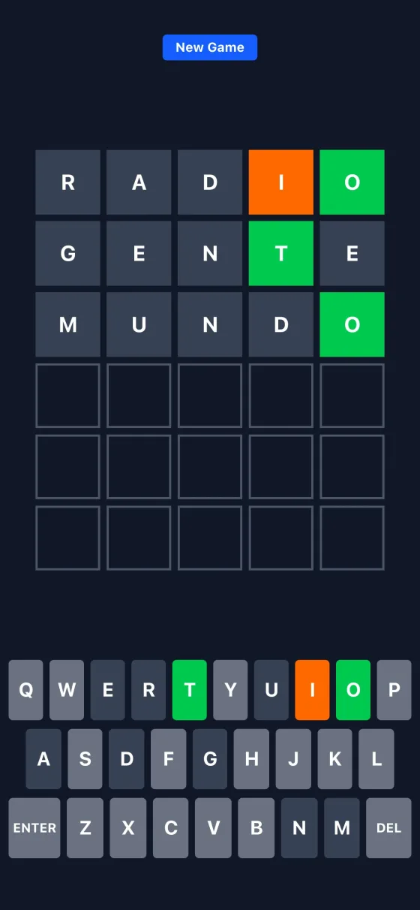

Game · Next.js · Docker
Hand-builtWordtron
A Spanish-language, Wordle-style word game: six tries to guess a five-letter word.

01 Overview
Wordtron is a word-guessing game in Spanish. Each round picks a secret five-letter word and you get six guesses, with the letters coloured green (right place) or orange (wrong place) after each one. It plays with a physical keyboard or the on-screen one, so it works on phones, and it can be installed as an app.
It started in 2022 as a university course project, where we were taught a range of topics, including how to build desktop apps with Electron. This version is a later web rewrite.
Source code: Original Electron version (2022) · Web version (2026)
02 How it works
- WordsA bundled dictionary: 1,259 words that can be the answer and 6,153 that are valid guesses.
- LogicA two-pass check: exact matches first, which consume the letter, then misplaced letters, so repeated letters are coloured correctly.
- No backendEverything runs in the browser; the dictionary loads as a static file.
03 Deployment
The app is containerised with a multi-stage Docker build on a small Node Alpine image, with a Compose file for running it. It was served behind the Nginx reverse proxy on my VPS, with its own subdomain and HTTPS. The playable version on this page is a static export of the same app, hosted here.
04 Technologies
05 How AI was used
I designed and wrote this myself. No AI wrote any of the code or configuration.